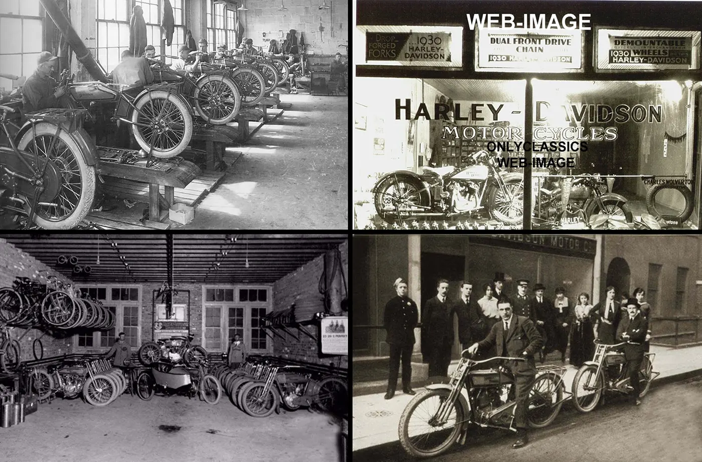

Harley-Davidson, Inc. (H-D, or simply Harley) is an American motorcycle manufacturer headquartered in Milwaukee, Wisconsin, United States. Founded in 1903, it is one of two major American motorcycle manufacturers to survive the Great Depression along with its historical rival, Indian Motorcycles.[3] The company has survived numerous ownership arrangements, subsidiary arrangements, periods of poor economic health and product quality, and intense global competition[4] to become one of the world's largest motorcycle manufacturers and an iconic brand widely known for its loyal following. There are owner clubs and events worldwide, as well as a company-sponsored, brand-focused museum.